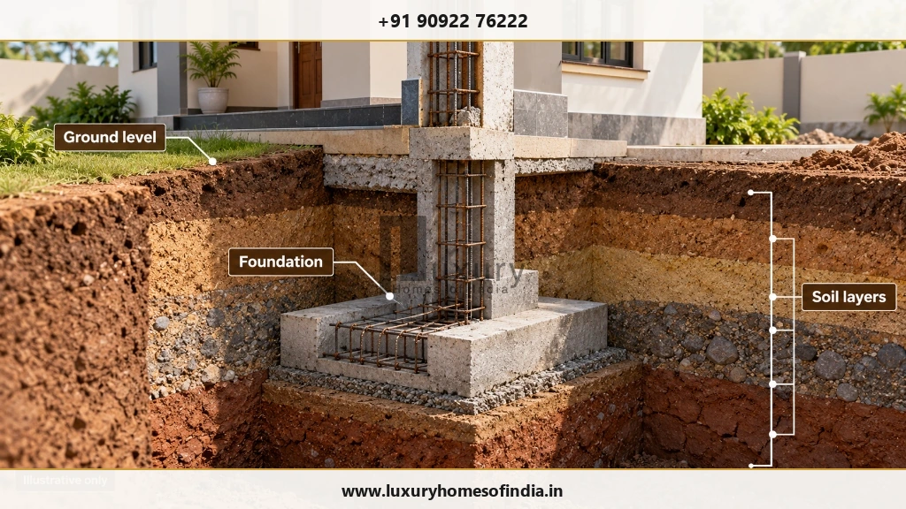
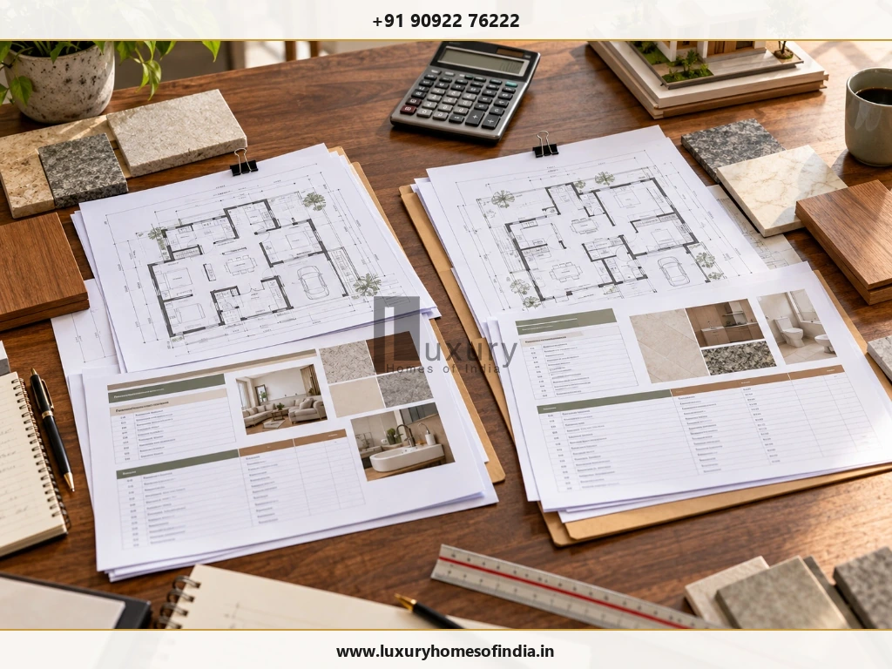

Two homes with the same built-up area in Chennai can have very different construction costs. The difference often comes down to the plot's soil conditions, foundation requirements, architectural complexity, material specifications, labour, building services and the work included in the contractor's quotation. Approval-related expenses, project management and changes during construction can also affect the final budget.
The most reliable way to estimate house construction costs is to evaluate the actual site, drawings, engineering requirements, specifications and complete scope of work—not just a quoted price per square foot. Homeowners should compare quotations line by line, identify exclusions, document material allowances and agree on a written process for approving additional work. This is especially important when planning a customised or luxury residence, where bespoke finishes and integrated services can introduce additional cost variables.
Understanding these factors before construction begins helps homeowners make informed decisions, reduce avoidable uncertainty and protect essential structural and waterproofing requirements without compromising the quality of their home.

1. Plot Location, Access and Site Conditions
The plot itself can influence the cost and complexity of construction.
A site with convenient vehicle access, sufficient working space and straightforward ground levels may be easier to organise than a narrow urban plot with restricted deliveries, neighbouring buildings close to the boundary or limited space for material storage.
Factors to assess include:
- Access for material delivery and equipment.
- Existing buildings, vegetation and demolition requirements.
- Ground levels, drainage and site clearance.
- Space for temporary storage and construction activities.
- Protection required for neighbouring properties.
A locality alone does not establish the cost of building a house. The actual plot, project specifications and site logistics must be evaluated.
2. Soil Conditions and Foundation Design
Foundation requirements depend on the proposed building, the ground conditions and the structural design. Soil strength, groundwater, existing fill and the depth of suitable bearing strata can influence excavation, foundation dimensions and construction methods.
Depending on the investigation and engineering assessment, additional excavation, dewatering, ground improvement or a different foundation system may be necessary. These requirements can change material quantities, labour and equipment needs.
The Bureau of Indian Standards' National Building Code of India covers soils and foundations within its structural design provisions.

3. Architectural Design and Building Complexity
Architectural choices influence both construction quantities and the level of coordination required on site.
A straightforward layout can have different requirements from a customised residence featuring long structural spans, double-height spaces, cantilevered balconies, large glazed openings, feature staircases or detailed façade treatments.
Design-related cost factors include:
- Number of floors and floor-to-floor heights.
- Structural spans and column arrangements.
- Balconies, terraces and covered outdoor areas.
- Custom windows, railings and staircases.
- Decorative cladding and specialist finishes.
- Integrated lighting and other architectural features.
A distinctive home does not have to rely on unnecessary complexity. A well-considered plan can balance aesthetics, usability, structural requirements and budget.

4. Materials, Finishes and Product Specifications
Construction quotations are only comparable when their material specifications are understood.
Cement, reinforcement steel, masonry units, flooring, windows, doors, plumbing components, electrical fittings and waterproofing systems may differ in grade, quality, quantity, finish and installation requirements.
| Component | What to Compare |
|---|---|
| Cement and reinforcement steel | Specified grade, quantity and procurement basis |
| Masonry | Block or brick type and installation scope |
| Flooring and stone | Product, size, finish, laying pattern and wastage allowance |
| Doors and windows | Frame material, glazing, hardware and dimensions |
| Plumbing and electrical | System specifications, fittings and included quantities |
| Waterproofing | Areas covered, system and application requirements |
| Paint and decorative finishes | Product range, surface preparation and number of coats |
Premium products can increase expenditure, but their overall impact depends on the quantities required, the price difference and installation costs. Upgrading a single fitting is not equivalent to changing the specification throughout an entire house.
5. Labour, Specialist Trades and Workmanship
Residential construction requires coordination between masonry, reinforcement fixing, carpentry, plumbing, electrical work, tiling, painting and other specialist trades.
Labour requirements can change with the complexity of the design, the skills needed, site accessibility, work sequencing and finishing expectations. Custom joinery, intricate tile patterns and specialist metalwork may require different skills from standard construction tasks.
Choosing the lowest labour quotation does not necessarily deliver the best overall value if workmanship problems lead to rework, repairs or premature deterioration.
6. Built-Up Area, Layout and Number of Floors
Built-up area is an important estimating input, but it does not fully describe the cost of a house.
Two homes with the same total floor area may differ in the number of bathrooms, staircase design, wall layout, structural arrangement, window sizes and service requirements. A single-storey layout and a two-storey layout with the same combined area may also require different structural and construction arrangements.
Before comparing rates, clarify:
- How built-up area is calculated.
- How balconies, staircases and covered parking are treated.
- Whether utility areas and terraces are included.
- Whether the quoted rate covers only civil construction or a wider package.
- Which areas and quantities are excluded.
7. Electrical, Plumbing and Additional Building Services
The structure is only one part of a functioning residence. Electrical installations, plumbing, drainage, water storage and other building services need to be planned and budgeted for as well.
The cost can vary according to the number of electrical points, bathrooms, pumps, water heaters, fittings and specialised systems. Optional provisions may include home automation, security systems, solar installations, air-conditioning, lifts and backup power.
These systems can also influence space planning, service routes and coordination between trades.
8. Approvals, Professional Fees and Statutory Requirements
Approval processes and associated expenses depend on the proposed building, the plot and the applicable authority.
Budget planning may need to account for architectural and engineering services, surveys, investigations, drawing preparation, applicable permission or permit charges, utility connections and other site-specific requirements.
Greater Chennai Corporation provides information on building permissions and town-planning procedures through its official website. The relevant process and authority should be confirmed for the individual property.
Not every contractor's quotation includes professional fees, statutory charges or approval coordination.
9. Project Management, Quality Control and Construction Duration
A construction project involves design coordination, procurement, labour scheduling, site execution and inspections. Poor coordination or late decisions can disrupt the sequence of work and create additional expenses.
Potential sources of delay or cost change include:
- Incomplete drawings or late design decisions.
- Changes to materials after procurement.
- Coordination problems between specialist trades.
- Site conditions that differ from initial assumptions.
- Material availability and contractual price adjustments.
- Additional work requested during execution.
Quality-control activities also require clear responsibilities, suitable inspections and documentation to check that work follows the agreed specifications and applicable technical requirements.
10. Quotation Scope, Exclusions and Changes During Construction
One of the most important reasons construction quotations differ is that they may cover different amounts of work.
A quotation may include the structure and basic finishes but exclude a modular kitchen, wardrobes, compound wall, gate, external paving, landscaping, certain fixtures or utility connections. Another may include more of these items while specifying different materials or allowances.
Compare the complete scope, not just the headline rate
| Scope Item | Question to Ask |
|---|---|
| Foundation and structure | What engineering assumptions and structural work are included? |
| Finishes | Which products, quantities and installation tasks are covered? |
| Electrical and plumbing | What systems, fittings and points are included? |
| Kitchen and wardrobes | Included, excluded or separately priced? |
| Waterproofing | Which areas and systems are covered? |
| Compound wall and external works | Are gates, paving, drainage and landscaping included? |
| Approvals and utilities | Who coordinates the process, and which charges are excluded? |
| Taxes and other charges | How are applicable charges treated? |
| Variations | How are additional work and price changes approved? |
A hypothetical example illustrates the problem: if one contractor includes kitchen installation and external paving while another excludes both, their headline prices do not represent the same package. The lower quotation cannot be judged fairly until the scope differences are reconciled.
Construction costs can also change when owners revise designs, choose products above the original allowance or request additional work. A written variation should document the change, its cost, its schedule implications and the required approval.
A practical checklist before selecting a builder
- Confirm that all quotations use the same drawings and area calculation.
- Review foundation and structural assumptions.
- Compare material specifications and allowances.
- Check electrical, plumbing and waterproofing scope.
- Identify kitchen, wardrobe and external-work exclusions.
- Confirm approval responsibilities and applicable charges.
- Review milestones, payment terms and the proposed schedule.
- Understand how changes and additional work are priced.
- Establish inspection, testing and defect-correction responsibilities.
- Allow for project-specific uncertainties in the budget.
The objective is not simply to choose the lowest quotation. It is to understand what the price covers, how the project will be managed and which financial risks remain outside the agreed scope.
Frequently Asked Questions
Plan Your Home Construction With Greater Clarity
Construction costs vary because every residential project combines its own site conditions, design choices, material specifications, engineering requirements and contractual scope.
The best starting point is a clear brief, a site-specific assessment and a written specification that allows meaningful quotation comparisons. With these foundations in place, homeowners can make more informed decisions about design, finishes, services and budget priorities.
Luxury Homes of India offers residential design and construction services. Homeowners planning a project can explore the company's published services and discuss their requirements before proceeding with a project-specific assessment.
- Explore Civil Engineering & Construction.
- View the LHI project gallery.
- Contact Luxury Homes of India.
Plan Your Construction With Transparent Specifications
Ensure every line item, milestone schedule, and material allowance is documented in a comprehensive BOQ before work begins on site.
Request Project-Specific Assessment